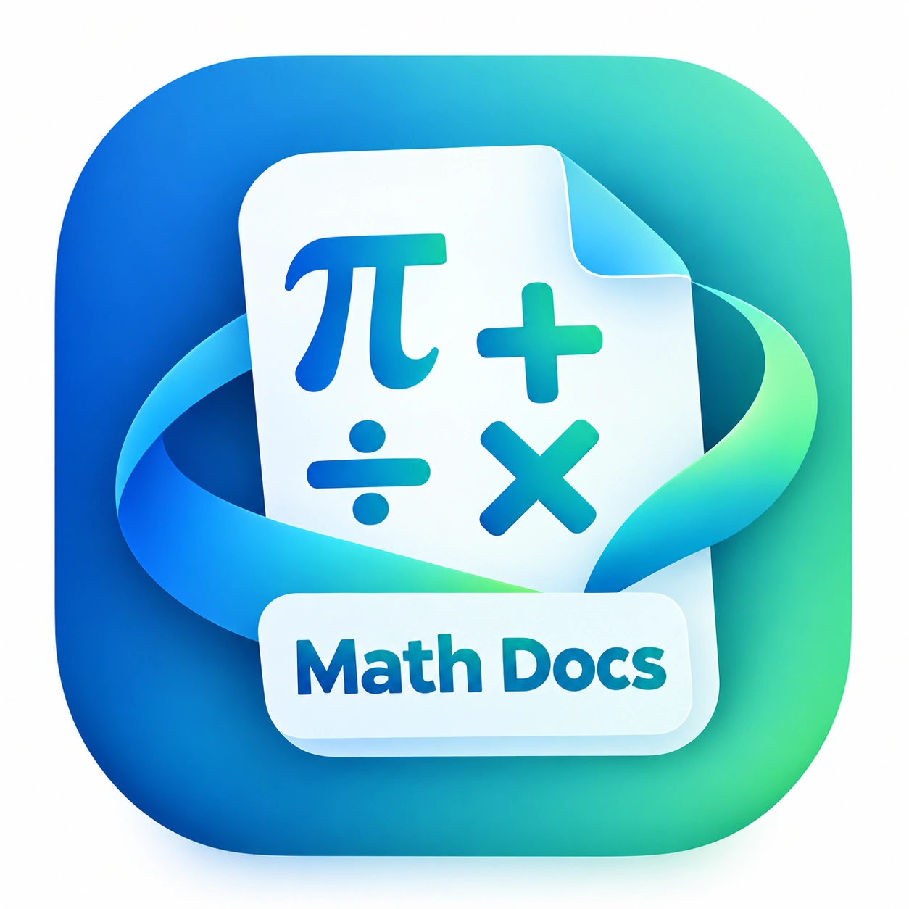

Rozwiąż zadanie krok po kroku
Wpisz równanie, nierówność, układ równań, wyrażenie albo opisz zadanie słowami. Proste równania liczę od razu na urządzeniu, resztę rozwiązuje AI.

Math Docs pracownia matematycznaWpisz równanie, nierówność, układ równań, wyrażenie albo opisz zadanie słowami. Proste równania liczę od razu na urządzeniu, resztę rozwiązuje AI.